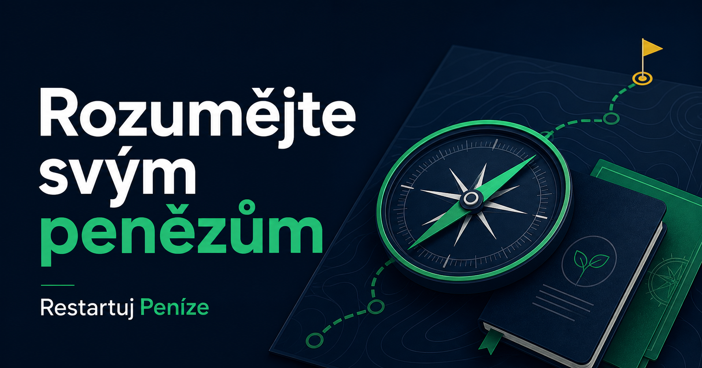

Před podpisem smlouvy
Víte, které pojmy, poplatky a podmínky si potřebujete nechat vysvětlit.
Restartuj Peníze je sada 9 názorných e-booků pro rozpočet, dluhy, poplatky, poradce, brokery a základy investování. Jednoduše, prakticky a bez slibů rychlého zbohatnutí.
Vzdělávací materiál, ne osobní investiční doporučení. Cílem je, abyste se dokázali lépe ptát, porovnávat a rozhodovat.
Finanční
(Re)Start
Osobní finance od první výplaty po pevnější finanční systém.
225 stran • 6 kapitol
Slovník investora
Pojmy a souvislosti bez zbytečné složitosti.
224 stran
Finanční mlha má konkrétní podobu
Když chybí základy a souvislosti, těžko se poznává, co je vhodné, co je drahé a na co se máte zeptat. Balíček vám dává strukturu pro situace, které řešíte dnes.
Víte, které pojmy, poplatky a podmínky si potřebujete nechat vysvětlit.
Máte konkrétní otázky a kritéria, podle kterých můžete nabídky porovnat.
Začnete rozpočtem, rezervou a místy, kde má smysl zkontrolovat pravidelné výdaje.
Rozpoznáte emoční spouštěče a získáte prostor rozhodnout se vlastním tempem.
Jeden systém, ne hromada PDF
Nemusíte přečíst všechno najednou. Začněte mapou a potom otevřete průvodce k situaci, kterou právě řešíte.
Porozumět
Nejdřív si srovnáte jazyk peněz, dluhů, ekonomiky a investování. Další informace tak konečně zapadnou do souvislostí.
Prověřit
Naučíte se všímat motivace druhé strany, způsobu odměňování, poplatků a varovných signálů v nabídce.
Rozhodnout
Převedete základy do rozpočtu, výběru brokera a přípravy na jednání o vlastní hodnotě a příjmu.
Kompletní obsah
Dvě hlavní knihy tvoří základ. Sedm kratších průvodců vám pomůže rychle otevřít konkrétní situaci, otázky a kontrolní body.
Základní mapa peněz, dluhů, rozpočtu, ekonomiky, práce a budování majetku.
Přehled pojmů, nástrojů a principů, ke kterému se můžete průběžně vracet.
Emoce, FOMO, pravidelnost a osobní pravidla pro klidnější rozhodování.
Jak rozpoznat časový tlak, falešnou autoritu a další manipulační vzorce.
Odměňování, kontrolní otázky a odpovědi, které mají být varovným signálem.
Regulace, poplatky, měnové konverze, výběry a vhodnost pro váš způsob investování.
Seznam oblastí, které má smysl zkontrolovat, porovnat nebo znovu vyjednat.
Příjmy, nezbytné a volitelné výdaje, rezerva, dluhy a dlouhodobé cíle.
Kompetence, měřitelné výsledky a příprava na rozhovor o odměně.
Jak s knihovnou pracovat
Začněte otázkou, kterou právě řešíte — rozpočet, poradce, broker, poplatky nebo nátlak.
Hlavní příručky dodají kontext. Praktický e-book zkrátí cestu ke konkrétním bodům.
Porovnejte podmínky, ověřte zdroje a udělejte rozhodnutí vlastním tempem.

Zpětná vazba testovacích čtenářů
Nejde o anonymní hvězdičky. Jde o konkrétní dojmy lidí, kteří dostali materiály k přečtení a popsali, co jim na nich pomohlo.
„Průvodce do světa investování, který od základu všechno vysvětlí. Obrázky, struktura — je to čtivé.“
„Je to víc zaměřené na praxi. Ve škole se člověk učí, ale často neví, jak informace použít.“
„Všechno to usazuje a dává lidem jistotu, aby se mohli ve financích opřít sami o sebe.“
Autor projektu
Lukáš Zahrádka
Proč projekt vznikl
Vlastní neznalost důležitých podmínek ve smlouvě mě stála více než 100 000 Kč. Začal jsem si finanční témata skládat od základů a převádět je do podoby, které rozumí i člověk bez ekonomického vzdělání.
Výsledkem není návod, kam investovat. Je to systém, který vám pomůže lépe rozumět informacím, se kterými se při finančních rozhodnutích setkáváte.
Kompletní balíček
Devět digitálních e-booků pro jistější orientaci v každodenních financích.
Jednorázová cena
1 490 Kč
za celý balíček • bez dalších plateb
Toto je náhled nabídky. Tlačítko zatím neodesílá objednávku ani platbu.
Časté otázky
Chceme, abyste přesně věděli, co kupujete — a také co tento balíček neslibuje.
Ne. Materiály vysvětlují pojmy, rizika a kontrolní otázky. Neříkají vám, co máte koupit, a nenahrazují individuální finanční, právní ani daňové poradenství.
Ano. Hlavní příručky začínají od základů a další průvodci na ně navazují. Doporučené pořadí je Finanční (Re)Start, Slovník investora podle potřeby, Mindset a potom praktický průvodce k vaší aktuální situaci.
Ne. Jde o digitální e-booky ve formátu PDF, které můžete číst na počítači, tabletu i telefonu.
Po úspěšné platbě vám přijde e-mail s přístupem nebo odkazy ke stažení. V této náhledové verzi ještě platební krok není aktivní.
Ne. Cena je jednorázová. Nevzniká žádná automaticky obnovovaná platba.
Poskytne vám vzdělávací základ, ale nenahrazuje individuální pomoc kvalifikované dluhové poradny, právníka nebo jiného odborníka.
Principy a kontrolní otázky jsou navržené jako dlouhodobě použitelné. Konkrétní sazby, regulaci a podmínky poskytovatelů je před rozhodnutím vždy potřeba ověřit v aktuálních oficiálních zdrojích.
Začněte u základů, které můžete použít při každém dalším rozhodnutí — od rodinného rozpočtu až po výběr brokera.
Prohlédnout kompletní nabídkuKompletní balíček
1 490 Kč